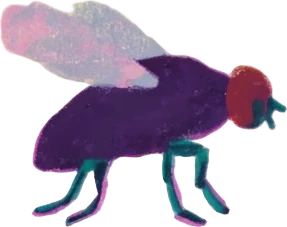
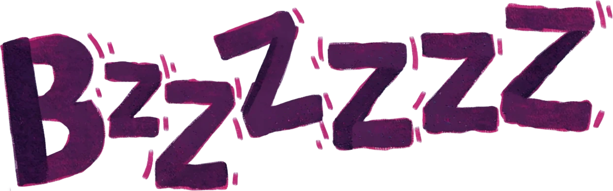
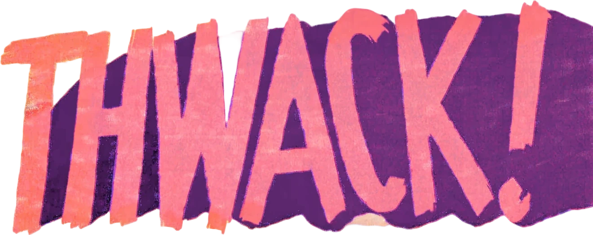

On Keeping Still
RECOVERING SYSTEM…
YOUR WORK COULD NOT BE RECOVERED.
0 of 2,431 words restored




The Fly.
You are the fly. Sound on. Click, then scroll.
Painting the room…
End.
Scroll up to rewind · click to start again